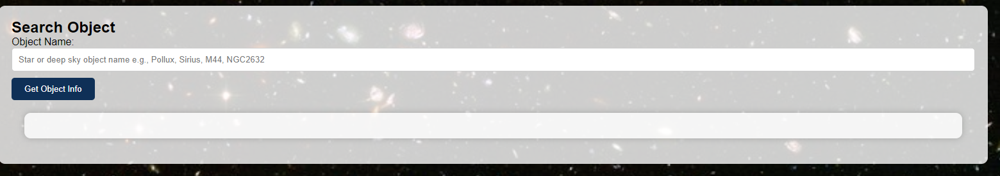
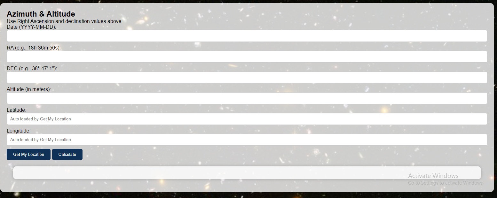
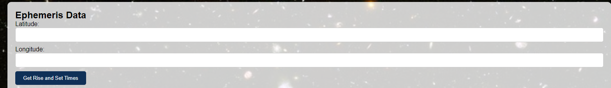

Plan your perfect night under the stars with our stargazing adventure web app
In the input fields, users can provide sky object names and their coordinates
Upon entering a search object's name, users get information about the object searched. This includes the celestial coordinates, object type, subtype and constellation
This feature gives users the rise and set times, Solar Noon time, Astronomical, Civil and Nautical Dawn and Dusk times when they enter their location coordinates
As a culmination of my foundational year at ALX-Holberton School, I conceptualized the Stargazing Planner web app. My motivation stemmed from the desire to meld my software engineering knowledge with my passion for stargazing. The goal was clear: create a tool that empowers both amateur astronomers and newcomers to stargazing, making their celestial observations more accessible.The Stargazing Planner accomplishes this by harnessing location data and user preferences to provide a comprehensive stargazing experience. Users input their location and select the celestial objects they wish to observe. The app then generates two crucial pieces of information. First, it determines which objects will be visible from their specific location. Second, it provides precise sky coordinates, guiding users to the exact spot where these celestial wonders can be found.
Developed within a three-week timeframe to align with school project deadlines, this web application is just the beginning. As time progresses, we plan to enhance its features, ensuring that stargazers continue to have an invaluable tool at their disposal.